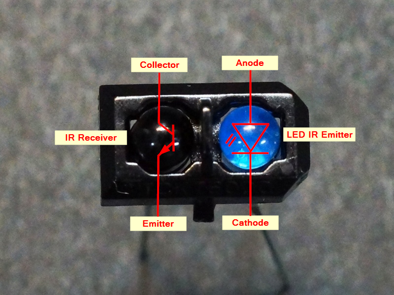

Zelfrijdende Auto met Arduino Nano
🔧 Stap 1: Motor aansturen met drukknoppen
In de eerste fase hebben we de basis gelegd: het aansturen van de twee DC-motoren met behulp van drukknoppen. Elke knop is verbonden met een digitale ingang van de Arduino.
Bij het indrukken van een knop gaat de bijbehorende motor draaien. Hiermee leerden we hoe motoren werken in combinatie met een motor driver (zoals de L298N of L293D) en hoe we ze via software kunnen starten of stoppen.
✅ Doel van deze stap: Begrijpen hoe je een motor bestuurt met een Arduino, Leren werken met digitale inputs en outputs

🖥️ Stap 2: LCD-scherm aansturen met I2C
In de tweede stap voegden we een LCD-scherm (1602 met I2C module) toe. Hiermee kunnen we in realtime laten zien wat de auto aan het doen is.
Denk aan teksten zoals: de auto rijdt, de auto staat stil,...
Dankzij het I2C-protocol heb je slechts 2 draden nodig (SDA en SCL), wat veel bekabeling scheelt.
✅ Doel van deze stap: informatie tonen aan de gebruiker, gebruik maken van I2C-communicatie
.jpeg)
📍 Stap 3: Zelfstandig zwarte lijn volgen met TCRT5000-sensoren
In de laatste en belangrijkste fase hebben we het wagentje autonoom gemaakt. We gebruiken hiervoor 2 TCRT5000 infraroodsensoren aan de onderkant van de auto, net naast elkaar geplaatst.
Deze sensoren detecteren het verschil tussen zwart (de tape) en wit (de vloer): Zwarte tape = lage reflectie ⇒ sensor LOW, Witte vloer = hoge reflectie ⇒ sensor HIGH
🔄 Logica: Links = zwart, rechts = wit ⇒ bocht naar links Rechts = zwart, links = wit ⇒ bocht naar rechts Beide = zwart ⇒ vooruit Beide = wit ⇒ stop of fout
Deze informatie stuurt de Arduino door naar de motor driver om de motoren afzonderlijk aan te sturen en de juiste richting te kiezen.
✅ Doel van deze stap: De auto automatisch laten reageren op de omgeving, Inzicht in line tracking-algoritmes en Werken met realtime input van sensoren
